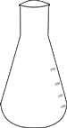
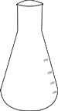
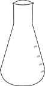

To verify the Beer-Lamberts law and estimation of copper (II) in the given solution by spectrocolorimetry.
Apparatus used:
Calorimeter, Conical flask, Test tube, Beaker, Dropper etc.
Solutions usedEthyl Diamine Tetra-Acetic Acid (EDTA) solution, Water sample, Calcium carbonate solution, Ammonia buffer solution, Eriochrome Black T (EBT) as indicatorDescriptionAccording to Beer-Lamberts law the optical density of absorbance of a solution of concentration ‘c’ mol dm-3 placed in a cell of ‘b’ cm width is given by
A = εbc
where ε is called the molar absorption coefficient or molar extinction coefficient. The absorbance A is defined as A = log (I0/I) .where I0 and I represents the intensities of incident and transmitted radiations since the optical density is linearly proportional to the concentration of the solution, a linear plot is expected for absorbance Vs concentration. .

ESTIMATION of copper(ii) by spectrocolorimetry
Why concentrated H2S04 added?
0.0 2.5 5.0 7.5 10
What is value of maximum wavelength?
480
0.11
perform experment again for different amount of solution
0.0 2.5 5.0 7.5 10
480
0.22
perform experment for further different amount of solution
0.0 2.5 5.0 7.5 10
480
0.33
perform experment for last amount of solution
0.0 2.5 5.0 7.5 10
480
0.44
OBSERVATION TABLE
Fill Optical density in simulator and then press fill table buttton
S.No.
Volume of CuSO4.5H2O Solution(ml)
Optical density
Average Optical density
1.
2.5
2.
5.0
3.
7.5
4.
10.0
Fill the Observation Table First Then Click the button.
Note down the volume of CuSO4 against the average Optical density.
Select the correct mean value?
Is the graph straight line?
Choose correct the formula
Question. If the Strength of the solution is 4gm/lit.Then how much amount of Copper is present in Solution ?
Enter your answer
Strength of solution = 4gm/lit So 1ml soln contains 0.004 g CuSO4 Hence 6.25 ml contains 0.025 g. Amount of Cu present =0.025(x) X 63.54(wt. of copper) / 249.65(wt. of CuSO4.5H2O ) =6.4 mg
NOTE DOWN THE READING OF OPACITY FOR CALCULATIONS & OBSERVATION TABLE

 
